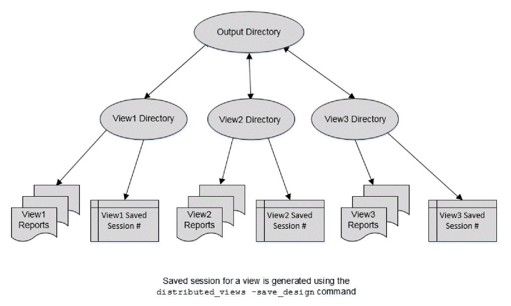

Saving and Restoring DMMMC Sessions
You can save and restore distributed MMMC sessions.
The save/restore flow is as follows:
-
The Tempus software reads the distributed MMMC data using the following command:
distribute_read_design -design_script design_load.tcl
-
You can save the design using the following command:
distribute_views-write_designlist_of_views (or you can specifyall)
Thedistribute_views -write_designparameter creates N parallel saved design databases, where N is the number of views specified in the list of views. You can provide a list of views that require the saved session. - Start another Tempus master session to restore the above saved sessions. You can also restore individual saved sessions in a non-distributed Tempus run.
-
You can use the following command to create N Tempus clients, each of which will load one saved session:
distribute_read_design -read_db
list_of_views-read_dirpathname_of_directory_of_saved_session - The -read_db parameter specifies the design views to restore.
The following script examples show distributed MMMC save and restore flows:
The following example saves sessions for N views:
set_distributed_hosts -local | -rsh ...
set_multi_cpu_usage -remote_hosts N
distribute_read_design -design_script design_load.tcl -out_dir Output
set Views [list func_rmax func_rcmin test_rcmax]
distribute_views -views $Views -script analysis.tcl –save_design all
The following example restores saved sessions for N views:
set_distributed_hosts -local
set_multicpu_usage -remote_hosts N
set Views [list func_rmax func_rcmin test_rcmax]
# output is the same directory used in the above example, where views were saved.
distribute_read_design -restore_design $Views -restore_dir Output -outdir new_output
distribute_command {report_timing}
To restore a single view from a DMMMC saved session on a single machine environment, use the following commands:
read_db Output/view1.enc.dat <topcell>
report_timing
The Output File Structure
The MMMC commands generate output data in directories corresponding to view names within the specified output directory. You can specify the output directory in the distribute_read_design command with the -out_dir parameter. For example, consider the following scenario:
- A design containing three views (view1, view2, and view3).
-
Run distribute_read_design
–design_script design_load.tcl –outdir Outputcommand. -
Specify the following commands in sta_dmmmc.tcl (script-3):
report_constraint -all_violators > rep.vio.gzreport_analysis_coverage > rep.coverage
report_timing -path_type endpoint -max_slack 0 > setup.rpt
report_timing -path_type endpoint -max_slack 0 -early > hold.rpt
The software will generate the following three reports inside each view's directory:
/dmmmc_logs/func_fast_RCMAX/setup.rpt
/dmmmc_logs/func_fast_RCMAX/setup.rpt
All the Tempus client specific .log/.cmd files reports will be saved in the ./dmmmc_logs directory. The directory structure is shown in the figure below.
Figure -2 Output directory structure in DMMMC mode

Return to top